Quick Navigation & Topic Roadmap
NumPy me data cleaning aur statistical calculation karte samay sabse badi chunauti hoti hai missing values aur non-finite numbers ko reliably handle karna. Har concept ko step-by-step master karne ke liye niche diye sections par click karein:
0. Opening Story: The Missing Temperature Reading
Maan lijiye aap ek smart weather monitoring station ke liye data analytics engine build kar rahe hain. Har ghante ek IoT sensor outdoor temperature record karta hai. Lekin ek din sham 4 baje sensor ka network wire loose ho gaya aur reading server tak pahuchi hi nahi!
Data science aur real-world engineering me missing measurements roz ka hissa hain. Agar aap us missing value ko galti se 0.0 maan lenge, toh 30°C ki garmi me achanak freezing weather record ho jayegi, jisse pura forecast model aur average temperature bigad jayega!
Python Execution: Missing Temperature Readings
Dekhiye kaise NumPy me missing reading ko handle kiya jata hai aur ordinary np.mean() vs np.nanmean() me kya farak padta hai:
import numpy as np # Weather telemetry array with 1 missing reading (np.nan) temperatures = np.array([28.5, 30.0, np.nan, 31.5, 29.0]) print("Temperatures:", temperatures) print("Contains NaN:", np.isnan(temperatures)) print("Valid readings:", temperatures[~np.isnan(temperatures)]) print("Ordinary mean:", np.mean(temperatures)) print("Mean ignoring NaN:", np.nanmean(temperatures))
Line-by-Line Breakdown
temperatures = np.array([28.5, 30.0, np.nan, 31.5, 29.0]): 5 floating-point temperatures create kiye gaye jisme index 2 parnp.nanmissing measurement ko darshata hai.np.isnan(temperatures): Ek Boolean mask return karta hai[False, False, True, False, False]jo exact missing index locate karta hai.temperatures[~np.isnan(temperatures)]: Tilde operator (~) mask ko invert kar deta hai, jisse sirf valid readings[28.5, 30.0, 31.5, 29.0]extract ho jati hain.np.mean(temperatures): Ordinary mean fail ho karnanreturn karta hai kyunki kisi bhi number me NaN add karne se result hamesha NaN hi hota hai (Poisoning effect).np.nanmean(temperatures): NaN ko gracefully ignore karke available 4 readings ka accurate average(28.5 + 30.0 + 31.5 + 29.0) / 4 = 29.75calculate karta hai!
Raw Telemetry Input → Detect Special Values (isnan, isinf) → Filter or Impute Safely → Analyze with NaN-Aware Functions
A. Understanding Missing & Special Numerical Values
Scientific computing aur numerical processing me computer ko aam numbers (integers, floats) ke alawa kuch special mathematical states ko handle karna padta hai. NumPy IEEE 754 standard ko strictly follow karta hai, jisme yeh special values defined hain:
1. What is Missing Data?
Missing data ka matlab hai ki kisi observational point par koi measurement record hi nahi ho saki (jaise battery dead ho jana, customer ka survey question skip kar dena, ya sensor ka disconnect hona). Missing data is never automatically zero!
2. What is NaN (Not-a-Number)?
np.nan IEEE 754 floating-point standard ka part hai. Yeh do situations me paida hota hai:
- Undefined Mathematical Operations: Jaise
0.0 / 0.0yanp.sqrt(-1.0). - Missing Data Representation: Scientific computing me missing numbers ko represent karne ke liye standard convention.
3. Positive & Negative Infinity (+inf, -inf)
np.inf aur -np.inf unbounded numerical values ko represent karte hain:
+np.inf: Tab paida hota hai jab positive number ko zero se divide kiya jaye (jaise10.0 / 0.0), ya calculation float64 limit (approx1.79e308) se badi ho jaye (Overflow).-np.inf: Tab paida hota hai jab negative number ko zero se divide kiya jaye (jaise-10.0 / 0.0), ya negative overflow ho.
4. Python None vs NumPy NaN
Python ka native None ek singleton object hai jo "absence of value" darshata hai, lekin yeh floating-point number nahi hai! Jab aap NumPy array me None daalte hain, toh NumPy us array ko numerical float array se degrade karke object array bana deta hai!
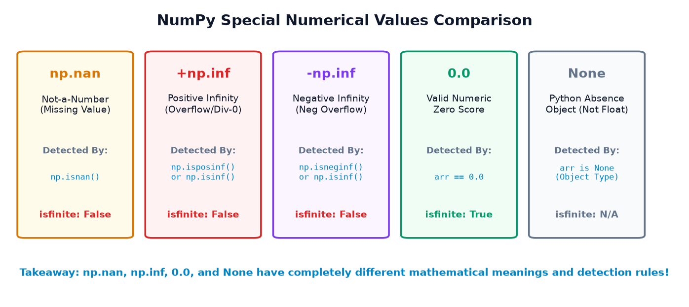
Example 1: Special Values Comparison & Finite Checking
Dekhiye kaise ek hi array me mixed special numerical values ko check kiya jata hai:
import numpy as np values = np.array([10.0, np.nan, np.inf, -np.inf, 0.0]) print("Values array:", values) print("NaN mask (np.isnan):", np.isnan(values)) print("Infinity mask (np.isinf):", np.isinf(values)) print("Finite mask (np.isfinite):", np.isfinite(values))
Example 2: The Danger of Python None in NumPy Arrays
Jab aap float array me None insert karte hain, toh array ka dtype object ban jata hai, jisse fast vectorization aur standard functions break ho jate hain:
import numpy as np # Array containing Python None mixed = np.array([1.0, None, 3.0]) print("Mixed array:", mixed) print("Mixed dtype:", mixed.dtype) # Safe numeric array using np.nan safe_numeric = np.array([1.0, np.nan, 3.0]) print("Safe numeric array:", safe_numeric) print("Safe numeric dtype:", safe_numeric.dtype) print("np.isnan() on safe array:", np.isnan(safe_numeric))
mixed = np.array([1.0, None, 3.0]) par np.isnan(mixed) run karenge, toh Python TypeError: ufunc 'isnan' not supported for the input types throw karega! Numerical arrays me missing values ke liye hamesha np.nan ka upyog karein.
Comparison Matrix: Special Values at a Glance
| Value | Meaning / Cause | Primary Detection | np.isfinite() |
Safe for Math? |
|---|---|---|---|---|
np.nan |
Missing value / Indeterminate 0/0 |
np.isnan() |
False |
Requires nanmean, etc. |
+np.inf |
Positive division by zero / Overflow | np.isposinf() or np.isinf() |
False |
No (Distorts sums to inf) |
-np.inf |
Negative division by zero / Underflow | np.isneginf() or np.isinf() |
False |
No (Distorts sums to -inf) |
0.0 |
Valid measured numerical zero | arr == 0.0 |
True |
Yes (Standard arithmetic) |
None |
Python object placeholder | arr is None (Object check) |
N/A (Crashes) | No (Breaks C-speed) |
B. Why NaN == NaN is Always False! (The IEEE 754 Trap)
Yeh NumPy aur Python ke beginners ke liye sabse bada surprise hota hai! Aam taur par hum kisi bhi value ko check karne ke liye value == target likhte hain. Lekin agar aap value == np.nan likhenge, toh chahe value NaN ho ya na ho, result hamesha False aayega!
np.nan == np.nan → False
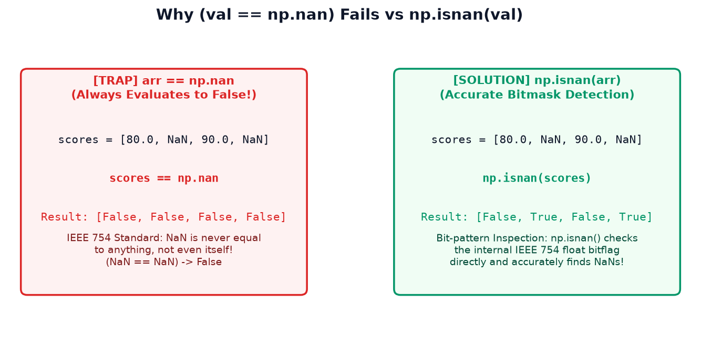
Example 1: Single Scalar Comparison
import numpy as np val = np.nan print("Direct Equality Check (val == np.nan):", val == np.nan) print("Correct NumPy Function (np.isnan(val)):", np.isnan(val)) print("Self Equality Check (val == val): ", val == val)
Example 2: Array Masking Trap with Student Scores
Agar aap ek array me missing scores dhoondhne ke liye scores == np.nan use karenge, toh aapka program bina kisi warning ke chupchap galat Boolean mask return karega!
import numpy as np scores = np.array([80.0, np.nan, 90.0, np.nan]) # Incorrect approach: produces all False! trap_mask = (scores == np.nan) print("Trap Mask (scores == np.nan):", trap_mask) # Correct approach: inspects IEEE 754 bit-pattern directly correct_mask = np.isnan(scores) print("Correct Mask (np.isnan(scores)):", correct_mask)
1 hote hain aur mantissa non-zero hota hai. Kyunki alag-alag invalid operations alag-alag mantissa bits chhod sakte hain (quiet NaN vs signaling NaN), standard ne rule banaya ki do "unknown / invalid" values kabhi mathematically equal claim nahi ki ja sakti! Isliye detection ke liye CPU hardware instruction isnan ka use hota hai.
C. Detecting Special Values with NumPy Functions
NumPy hume fast, vectorized C-level ufuncs provide karta hai jo har numerical anomaly ko accurate Boolean mask me convert kar dete hain:
np.isnan(arr): Element NaN hai ya nahi check karta hai.np.isinf(arr): Element+infya-infhai ya nahi check karta hai.np.isposinf(arr): Sirf strictly positive infinity (+inf) check karta hai.np.isneginf(arr): Sirf strictly negative infinity (-inf) check karta hai.np.isfinite(arr): Check karta hai ki element ek valid finite number hai (Na toh NaN hai aur na hi Infinity).
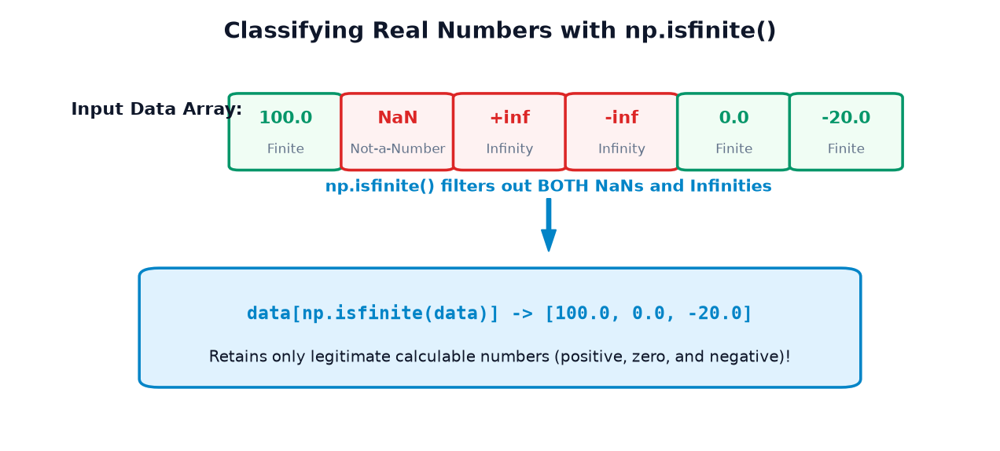
Example 1: Comprehensive Sensor Telemetry Validation
import numpy as np readings = np.array([24.5, np.nan, 26.0, np.inf, -np.inf, 25.5]) print("Raw readings:", readings) print("np.isnan: ", np.isnan(readings)) print("np.isinf: ", np.isinf(readings)) print("np.isposinf:", np.isposinf(readings)) print("np.isneginf:", np.isneginf(readings)) print("np.isfinite:", np.isfinite(readings))
Example 2: Extracting All Finite Numbers
Data science pipelines me sabse common requirement hoti hai: "Mujhe sirf wo numbers do jinke saath me safe maths kar saku." Yahan np.isfinite() sabse powerful tool hai:
import numpy as np data = np.array([100.0, np.nan, np.inf, -np.inf, 0.0, -20.0]) # Generate boolean mask of legitimate finite numbers finite_mask = np.isfinite(data) finite_values = data[finite_mask] print("Original data:", data) print("Finite mask: ", finite_mask) print("Finite values:", finite_values)
0.0 aur -20.0 dono hi finite_mask me True aate hain! np.isfinite() zero ya negative numbers ko reject nahi karta; yeh sirf non-computable anomalies (NaN aur ±inf) ko filter out karta hai.
D. Boolean Masking & Filtering Invalid Values
Topic 12 (Boolean Masking) me humne seekha tha ki Boolean arrays ko indexing bracket arr[mask] me pass karke values ko filter kiya jata hai. Missing value processing me yeh technique sabse zyada use hoti hai.
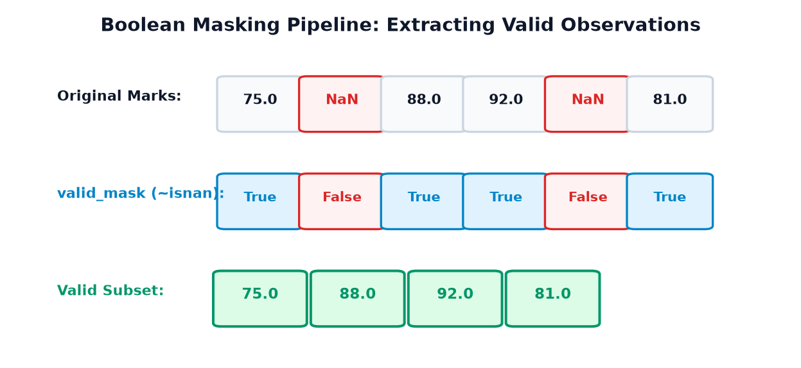
1. Removing NaNs with the Invert Operator (~)
np.isnan(arr) hume True deta hai jahan NaN hai. Lekin hume wo values chahiye jo NaN nahi hain. Iske liye hum tilde operator ~ (bitwise NOT) lagate hain:
import numpy as np marks = np.array([75.0, np.nan, 88.0, 92.0, np.nan, 81.0]) # Invert mask: True for valid numbers, False for NaN valid_mask = ~np.isnan(marks) valid_marks = marks[valid_mask] print("Original Marks:", marks) print("Valid Mask: ", valid_mask) print("Cleaned Marks: ", valid_marks) print("Cleaned Count: ", len(valid_marks), "out of", len(marks))
2. Filtering Both NaNs and Infinities
Agar dataset me sensor disconnection (NaN) aur calculation divide-by-zero (inf) dono maujood hain, toh ~np.isnan() lagane se infinity bachi reh jayegi! Yahan sabse safe approach np.isfinite() hai:
import numpy as np readings = np.array([20.5, np.inf, 21.0, np.nan, -np.inf, 22.0]) # Filter out ALL invalid anomalies in a single step finite_mask = np.isfinite(readings) finite_readings = readings[finite_mask] print("Mask: ", finite_mask) print("Finite readings:", finite_readings)
valid_marks = marks[valid_mask] karte hain, toh NumPy ek new array (copy) return karta hai. Original marks array me se missing values delete nahi hoti hain! Original array ka shape aur data unchanged rehta hai.
E. Replacing Missing or Invalid Values (Imputation)
Real-world machine learning models (jaise Scikit-learn ke LinearRegression ya SVM) NaN input accept nahi karte. Isliye data scientists ko missing values ko kisi sensible number se replace (impute) karna padta hai.
When to Replace vs When to Filter?
- Filter (Drop): Jab missing rows ka percentage bohot chhota ho (< 2%) aur rows drop karne se dataset ka balance na bigde.
- Replace (Impute): Jab dataset chhota ho ya har row valuable ho, aur missing value ki jagah mean, median, ya placeholder lagana scientifically justified ho.
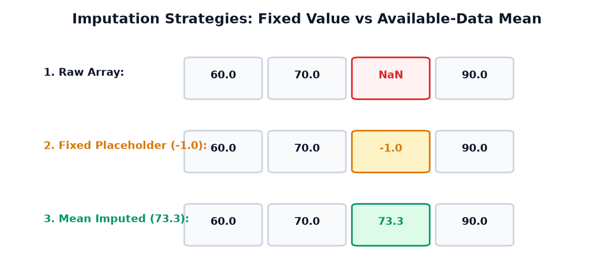
Strategy 1: Fixed Placeholder Replacement
Kabhi-kabhi hum missing value ko ek specific flag value (jaise -1.0 ya -999.0) de dete hain taaki downstream systems ko pata chale ki yeh synthetic value hai:
import numpy as np data = np.array([10.0, np.nan, 30.0, np.nan]) # Always copy before mutating to protect raw source data! cleaned = data.copy() cleaned[np.isnan(cleaned)] = -1.0 print("Original:", data) print("Cleaned: ", cleaned)
Strategy 2: Mean Imputation from Available Data
Exam scores ya sensor readings me sabse reliable baseline hota hai available data ka mean calculate karke missing slot me bharna:
import numpy as np scores = np.array([60.0, 70.0, np.nan, 90.0]) # Step 1: Calculate mean using only valid observations mean_value = np.nanmean(scores) # Step 2: Impute missing slots cleaned = scores.copy() cleaned[np.isnan(cleaned)] = mean_value print("Available-data mean:", mean_value) print("Imputed scores: ", cleaned)
scores = [60, 70, NaN, 90] me NaN ki jagah 0.0 daal denge, toh array ban jayegi [60, 70, 0, 90] jiska mean gir kar 55.0 ho jayega! Jabki valid bachho ka average 73.33 tha! Imputation strategy hamesha domain logic ke hisab se chuniye aur data log me document kijiye.
F. NaN-Aware Aggregation Functions (The nan* Family)
Data science me standard aggregation functions (jaise np.mean(), np.sum(), np.median(), np.min(), np.max()) agar kisi bhi array me ek akela NaN dekh lein, toh unka pura output NaN ho jata hai!
Ise computer science me NaN Poisoning kehte hain. Is problem ko solve karne ke liye NumPy hume dedicated NaN-Aware (nan*) functions provide karta hai:
| Standard Function | Behavior on NaN | NaN-Aware Equivalent | Safe Behavior |
|---|---|---|---|
np.mean() |
Returns nan |
np.nanmean() |
Computes mean of valid items only |
np.median() |
Returns nan |
np.nanmedian() |
Computes median of valid items only |
np.sum() |
Returns nan |
np.nansum() |
Treats NaN as 0 in the summation |
np.min() / max() |
Returns nan |
np.nanmin() / nanmax() |
Finds min/max among valid numbers |
np.std() / var() |
Returns nan |
np.nanstd() / nanvar() |
Computes variance ignoring missing |
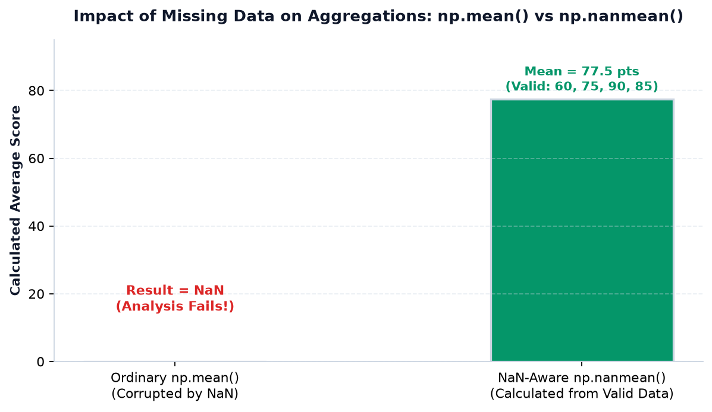
Example 1: Student Scores Statistical Aggregation
import numpy as np scores = np.array([60.0, 75.0, np.nan, 90.0, 85.0]) print("Standard mean: ", np.mean(scores)) print("NaN-aware mean: ", np.nanmean(scores)) print("Standard median: ", np.median(scores)) print("NaN-aware median:", np.nanmedian(scores))
Example 2: Sales Aggregation & Min/Max Bounds
import numpy as np sales = np.array([100.0, 150.0, np.nan, 200.0]) print("Ordinary sum: ", np.sum(sales)) print("NaN-aware sum: ", np.nansum(sales)) print("NaN-aware min: ", np.nanmin(sales)) print("NaN-aware max: ", np.nanmax(sales))
np.nanmean() run karenge jisme saari values hi np.nan hain (jaise np.array([np.nan, np.nan])), toh NumPy ek RuntimeWarning: Mean of empty slice raise karega aur result nan return karega! Production pipelines me hamesha check karein: if np.isnan(arr).all(): ... taaki empty slice warnings gracefully handle ho sakein.
G. Division by Zero & Infinite Results
Python me agar aap normal integer ya float ko zero se divide karte hain (jaise 10 / 0), toh Python turant ZeroDivisionError raise karke program crash kar deta hai. Lekin NumPy ke vectorized floating-point operations me aisa nahi hota!
Nonzero Positive / 0.0→+inf(Positive Infinity)Nonzero Negative / 0.0→-inf(Negative Infinity)0.0 / 0.0→nan(Indeterminate State)
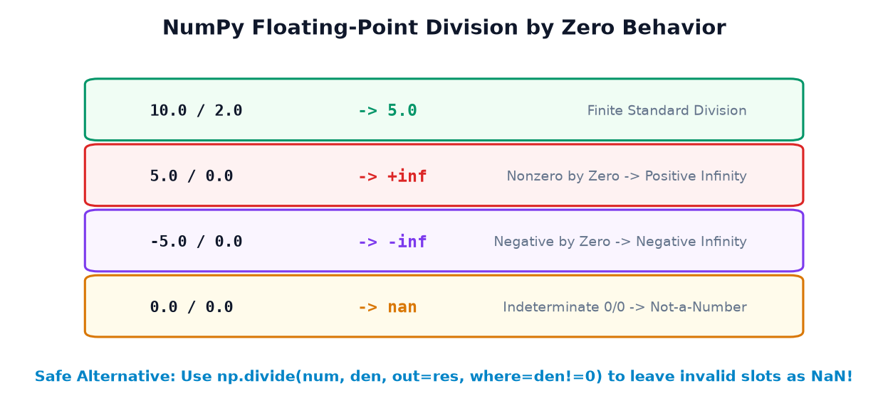
Example 1: Controlling Warnings with np.errstate
Jab bhi division by zero hota hai, NumPy RuntimeWarning: divide by zero encountered emit karta hai. Context manager np.errstate() ki madad se aap temporary warning suppress kar sakte hain:
import numpy as np numerator = np.array([10.0, 5.0, 0.0]) denominator = np.array([2.0, 0.0, 0.0]) # Suppress warning locally within context with np.errstate(divide="ignore", invalid="ignore"): result = numerator / denominator print("Calculated result:", result) print("Index 0 (10/2):", result[0]) print("Index 1 (5/0): ", result[1]) print("Index 2 (0/0): ", result[2])
Example 2: Safe Division Policy with np.divide(where=...)
Data science me sabse professional aur robust tarika hota hai np.divide() ka where= parameter use karna. Jahan denominator zero ho, wahan calculation ko bypass karke default slot me np.nan chhod diya jata hai bina koi warning emit kiye:
import numpy as np numerator = np.array([10.0, 5.0, 0.0]) denominator = np.array([2.0, 0.0, 0.0]) # Pre-allocate output buffer with np.nan result = np.full(numerator.shape, np.nan) # Perform division ONLY where denominator is non-zero np.divide( numerator, denominator, out=result, where=(denominator != 0) ) print("Safe division result:", result)
Profit / 0 Revenue ko zero convert kar denge, toh iska matlab hoga margin 0% hai. Lekin reality me unknown margin hai (undefined)! Undefined mathematical division ko hamesha np.nan mark kijiye taaki downstream auditors ko pata rahe ki reading invalid hai.
H. Floating-Point Overflow & Numerical Safety
Computers me numbers finite number of bits (aam taur par 64 bits = 8 bytes) me store hote hain. Standard np.float64 maximum lagbhag 1.7976931348623157e+308 tak ke numbers ko represent kar sakta hai.
Agar koi mathematical calculation is limit se badi ho jaye, toh number explode hokar +inf (Overflow) ban jata hai!
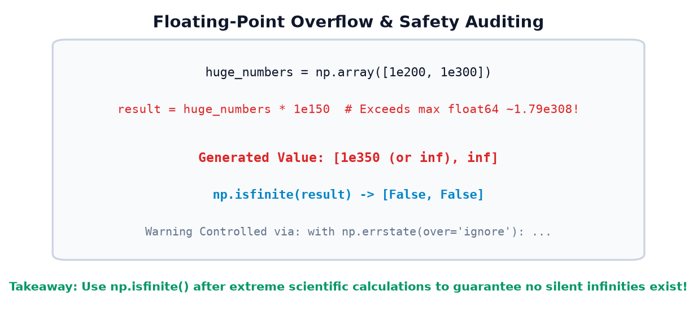
Example 1: Inspecting Extreme Numbers & Overflow
import numpy as np # Floating-point limits inspection info = np.finfo(np.float64) print("Float64 max limit:", info.max) # Multiplication exceeding 1.79e308 overflows to inf with np.errstate(over="ignore"): large_num = np.array([1e200, 1e300]) overflow_res = large_num * 1e150 print("Overflowed Result:", overflow_res) print("Is Result Finite? :", np.isfinite(overflow_res))
Example 2: Auditing Scientific Computing Pipelines
Exponential functions (np.exp) me bohot tezi se overflow ho sakta hai. Production scientific systems me calculations ke turant baad np.isfinite() audit run karna mandatory hota hai:
import numpy as np powers = np.array([10.0, 100.0, 800.0]) with np.errstate(over="ignore"): exp_results = np.exp(powers) print("Exp Results:", exp_results) print("Valid mask :", np.isfinite(exp_results))
float32 use karte hain. Yaad rakhein ki float32 ka max limit sirf 3.4028235e+38 hota hai! Yani float32 bohot jaldi overflow ho sakta hai. Scientific precision ke liye hamesha float64 prefer karein.
I. NaN and Infinity in 2D Arrays & Matrices
Real-world datasets hamesha 2D tabular formats (rows aur columns) me hote hain — jaise rows = students aur columns = subjects, ya rows = devices aur columns = hourly timestamps.
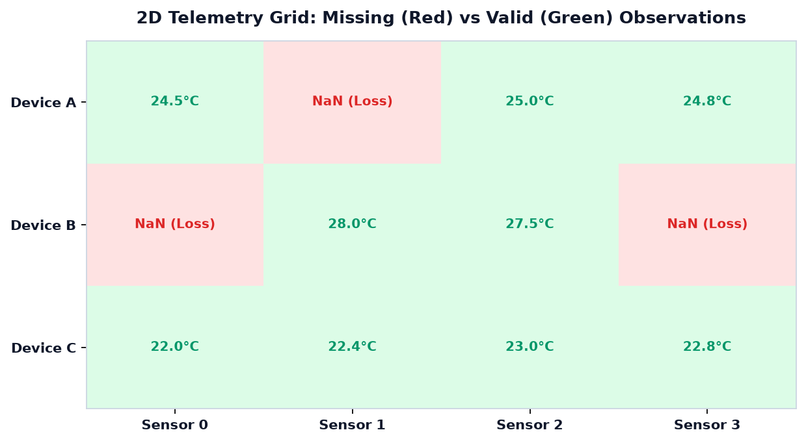
1. Detecting & Counting Missing Values per Axis
2D array me hum np.isnan(matrix).sum(axis=...) use karke pata laga sakte hain ki kis student ya kis device me kitni readings missing hain:
import numpy as np # 3 students x 4 subject tests marks_matrix = np.array([ [85.0, np.nan, 90.0, 78.0], [np.nan, 88.0, 72.0, np.nan], [92.0, 95.0, 89.0, 91.0] ]) nan_mask = np.isnan(marks_matrix) row_missing = nan_mask.sum(axis=1) # Missing tests per student (row) col_missing = nan_mask.sum(axis=0) # Missing tests per subject (col) print("Total missing in matrix: ", nan_mask.sum()) print("Missing tests per student:", row_missing) print("Missing tests per subject:", col_missing)
2. Axis-Wise NaN-Aware Mean Calculation
Agar hume har student ka individual average nikalna ho bina missing exams se score poison kiye:
import numpy as np marks_matrix = np.array([ [85.0, np.nan, 90.0, 78.0], [np.nan, 88.0, 72.0, np.nan], [92.0, 95.0, 89.0, 91.0] ]) # axis=1 computes average across subjects for each student student_averages = np.nanmean(marks_matrix, axis=1) # axis=0 computes average across students for each subject subject_averages = np.nanmean(marks_matrix, axis=0) print("Student Averages (axis=1):", student_averages) print("Subject Averages (axis=0):", subject_averages)
85.0, NaN, 90.0, 78.0. np.nanmean ne 3 valid subjects ka sum (85 + 90 + 78 = 253) / 3 = 84.33 nikala. Student 1 ke sirf 2 exams valid the (88 + 72 = 160) / 2 = 80.0!
J. Real-Life Data Engineering Case Studies (Part 1)
Data science theory tab tak adhuri hai jab tak aap real-world noisy data par hands-on cleaning na karein. Niche 3 practical enterprise applications dekhiye:
Case Study 1: Student Examination Records & Absenteeism
Problem: Ek school examination portal par 5 students ke scores record hue. Aman aur Chirag ne paper diya, Bhavna absent thi (NaN), Divya ne exam diya par zero mila (0.0), aur Esha topper thi (92.0). School ko class average nikalna hai.
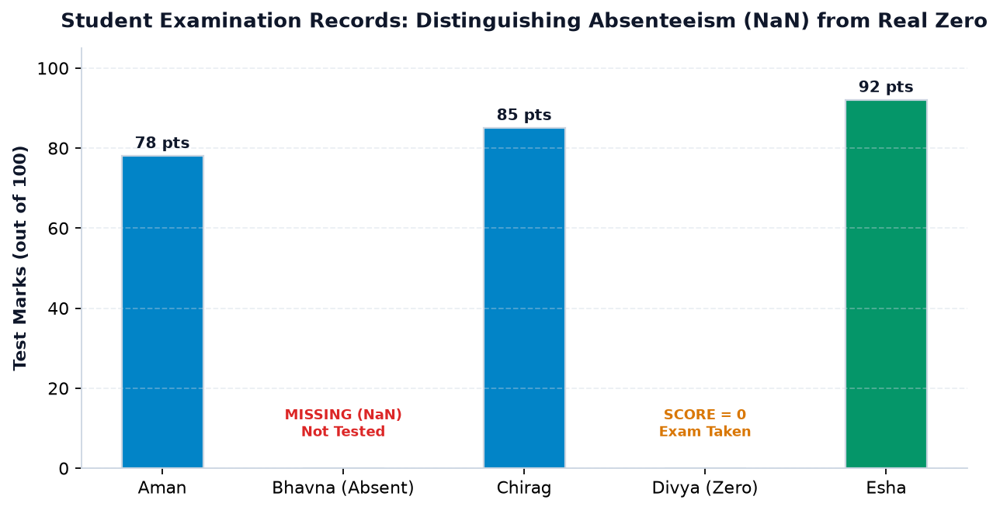
import numpy as np # Raw student marks: Bhavna is NaN (Absent), Divya is 0.0 (Failed) students = ["Aman", "Bhavna", "Chirag", "Divya", "Esha"] raw_scores = np.array([78.0, np.nan, 85.0, 0.0, 92.0]) # Safe Average among students who actually attended exam valid_mask = ~np.isnan(raw_scores) attended_students = np.array(students)[valid_mask] attended_scores = raw_scores[valid_mask] class_avg_attended = np.nanmean(raw_scores) print("Students who attended:", attended_students) print("Their valid scores :", attended_scores) print("Accurate Class Average:", class_avg_attended)
Case Study 2: Weather Station Sensor Loss & Derived Metrics
Problem: Ek weather telemetry unit rozana temperature readings capture karta hai. Wednesday ko sensor offline tha (NaN), aur Thursday ko wind-chill calculation ratio me zero denominator aane se infinity aa gaya (+inf). System ko weekly genuine average compute karna hai.
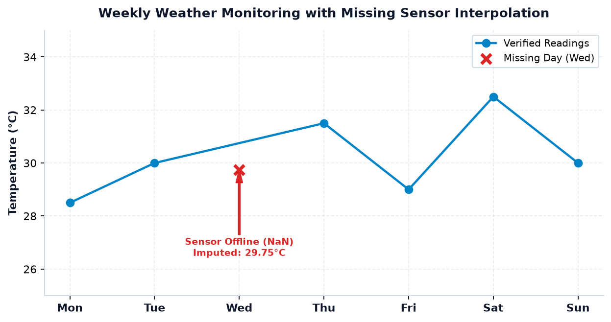
import numpy as np days = ["Mon", "Tue", "Wed", "Thu", "Fri", "Sat", "Sun"] weekly_temps = np.array([28.5, 30.0, np.nan, 31.5, 29.0, 32.5, 30.0]) # Filter valid temperature days valid_mask = np.isfinite(weekly_temps) valid_days = np.array(days)[valid_mask] valid_temps = weekly_temps[valid_mask] weekly_mean = np.nanmean(weekly_temps) print("Valid Weather Days:", valid_days) print("Valid Temperatures:", valid_temps) print("Weekly Mean Temp :", weekly_mean)
Case Study 3: E-Commerce Store Sales & Conversion Rates
Problem: Ek retail website 4 product categories ka sales performance track karti hai: Units Sold aur Total Revenue. Category 2 ka sales record missing tha (NaN), aur Category 3 launch hui thi par 0 units biki. Average price per unit calculate karna hai bina div-by-zero crash ke.
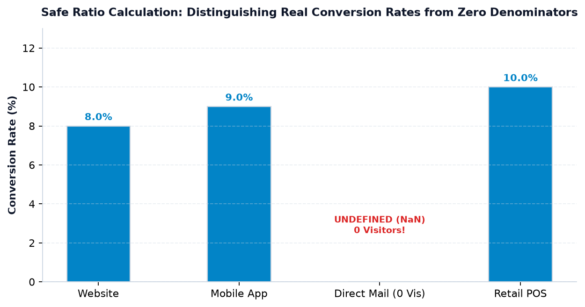
import numpy as np revenue = np.array([5000.0, np.nan, 0.0, 12000.0]) units_sold = np.array([50.0, 20.0, 0.0, 80.0]) # Safe unit price calculation using where= unit_prices = np.full(revenue.shape, np.nan) np.divide( revenue, units_sold, out=unit_prices, where=(units_sold > 0) & (~np.isnan(revenue)) ) print("Revenue: ", revenue) print("Units Sold: ", units_sold) print("Unit Prices:", unit_prices) print("Overall Avg Price:", np.nanmean(unit_prices))
J. Real-Life Data Engineering Case Studies (Part 2)
Case Study 4: IoT Smart Factory Telemetry & Signal Quality Audit
Problem: Ek automated automobile manufacturing plant me 5 vibration sensors machinery ki health monitor karte hain. Har ghante sensor readings (vibration frequency in Hz) capture ki jati hain. Vibration reading NaN tab aati hai jab sensor disconnect ho jata hai, aur +inf tab aati hai jab voltage surge se amplifier saturate ho jata hai. Maintenance engineer ko data quality report nikalni hai.
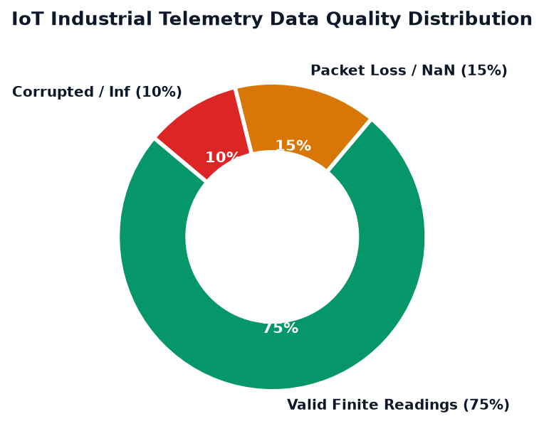
import numpy as np raw_telemetry = np.array([120.4, np.nan, 118.2, np.inf, 119.8, np.nan, 121.0]) # Step 1: Detect specific anomaly categories nan_count = np.isnan(raw_telemetry).sum() inf_count = np.isinf(raw_telemetry).sum() finite_mask = np.isfinite(raw_telemetry) valid_count = finite_mask.sum() # Step 2: Safe operation on legitimate vibration signals avg_vibration = np.mean(raw_telemetry[finite_mask]) print("Total Telemetry Points: ", len(raw_telemetry)) print("Sensor Disconnections (NaN):", nan_count) print("Voltage Surge Outliers (Inf):", inf_count) print("Valid Signals for Analysis :", valid_count) print("Average Factory Vibration :", round(avg_vibration, 2), "Hz")
Case Study 5: Machine Learning Feature Cleaning Pipeline
Problem: Ek predictive maintenance tabular dataset me 4 features hain (Temperature, Pressure, Speed, Torque). Scikit-Learn model train karne se pehle data me se missing aur infinite values clean karni hain. Hum do strategies compare karenge: (A) Drop Invalid Rows, aur (B) Feature-wise Median Imputation.
import numpy as np # 4 samples x 3 features features = np.array([ [25.0, 101.3, 1500.0], [28.0, np.nan, 1550.0], [np.nan, 102.1, np.nan], [26.5, 101.8, 1520.0] ]) # Strategy A: Complete Case Analysis (Drop any row containing NaN) row_is_valid = ~np.isnan(features).any(axis=1) dropped_matrix = features[row_is_valid] # Strategy B: Column-wise Median Imputation imputed_matrix = features.copy() col_medians = np.nanmedian(imputed_matrix, axis=0) for col_idx in range(imputed_matrix.shape[1]): col_mask = np.isnan(imputed_matrix[:, col_idx]) imputed_matrix[col_mask, col_idx] = col_medians[col_idx] print("Dropped Matrix (Rows retained):", len(dropped_matrix)) print(dropped_matrix) print("\nImputed Matrix (All 4 rows preserved):") print(imputed_matrix)
Case Study 6: Financial Valuation & P/E Ratio Safety Auditing
Problem: Ek algorithmic stock screener 4 companies ke stock price aur earnings per share (EPS) track karta hai. Company B loss-making hai (EPS = 0), aur Company C ka EPS record missing hai (NaN). Price-to-Earnings (P/E) ratio Price / EPS calculate karte samay division-by-zero aur negative earnings ko professionally handle karna hai.
import numpy as np tickers = ["ALPHA", "BETA", "GAMMA", "DELTA"] prices = np.array([250.0, 120.0, 85.0, 410.0]) eps = np.array([12.5, 0.0, np.nan, 20.5]) # Pre-allocate ratio array with np.nan pe_ratios = np.full(prices.shape, np.nan) # Financial Rule: P/E is meaningful ONLY when EPS is strictly positive! valid_eps_mask = (eps > 0) & np.isfinite(eps) np.divide( prices, eps, out=pe_ratios, where=valid_eps_mask ) for t, p, e, pe in zip(tickers, prices, eps, pe_ratios): pe_str = f"{pe:.2f}" if np.isfinite(pe) else "N/A (Invalid EPS)" print(f"Ticker {t:5s} | Price: {p:6.1f} | EPS: {str(e):5s} | P/E: {pe_str}")
K. 12 Common Traps & Professional Debugging
Data science interviews aur real-world production pipelines me missing values sabse zyada bugs create karte hain. Niche diye gaye 12 traps ko dhyaan se samjhein:
Trap 1: Using value == np.nan to detect missing values
Buggy Code: mask = (arr == np.nan)
Actual Output: [False, False, False] (Hamesha False return hota hai!)
Why it Happens: IEEE 754 standard ke mutabik NaN khud apne barabar nahi hota.
Fix: Hamesha mask = np.isnan(arr) ka upyog karein.
Trap 2: Treating NaN and Zero as equivalent
Buggy Code: Missing exam marks ya sensor reading ko bina soche 0.0 se replace kar dena.
Why it Happens: Zero ek actual measured score hota hai. Missing value ka matlab hai data record nahi hua.
Fix: NaN ko 0 na banayein; np.nanmean() use karein ya proper statistical imputation karein.
Trap 3: Using ordinary np.mean() on datasets containing NaN
Buggy Code: avg = np.mean(temperatures) → Returns nan.
Why it Happens: Ek single NaN pura summation poison kar deta hai.
Fix: Use np.nanmean(temperatures).
Trap 4: Assuming np.nanmean() ignores Infinity (+inf / -inf)
Buggy Code: arr = np.array([10.0, np.inf, 20.0]); np.nanmean(arr) → Returns inf!
Why it Happens: nanmean sirf NaN ko ignore karta hai, Infinity ko nahi!
Fix: Use np.mean(arr[np.isfinite(arr)]).
Trap 5: Assuming np.isfinite() checks only for NaN
Why it Happens: Kuch log sochte hain ki isfinite() aur ~isnan() same hain.
Reality: isfinite() NaN, +inf, aur -inf teeno ko reject karta hai!
Fix: Agar sirf NaN hatana hai toh ~np.isnan() use karein; agar saari anomalies hatani hain toh np.isfinite() use karein.
Trap 6: Assuming Python None behaves like floating-point NaN
Buggy Code: arr = np.array([1.0, None, 3.0]); np.isnan(arr)
Actual Error: TypeError: ufunc 'isnan' not supported for the input types.
Fix: Array create karte waqt np.nan use karein ya arr.astype(float) karein.
Trap 7: Replacing every invalid value with zero without domain logic
Risk: Financial returns ya temperature me 0 fill karne se statistical distribution permanently skew ho jati hai.
Fix: Available data mean, median, ya forward-fill use karein aur decision document karein.
Trap 8: Ignoring divide-by-zero warnings without inspecting results
Buggy Code: res = num / den me warning aane par sirf np.errstate(divide='ignore') lagakar bhul jana.
Risk: Array me chupchap inf baith jayega aur aage ke matrix operations corrupt ho jayenge.
Fix: Safe divide policy use karein: np.divide(num, den, out=res, where=den!=0).
Trap 9: Assuming a filtered array repairs the original dataset
Misconception: valid_arr = arr[~np.isnan(arr)] run karne se lagta hai ki original arr clean ho gaya.
Reality: Boolean indexing ek new 1D copy banata hai. Original array jaisi thi waisi hi rehti hai.
Trap 10: Running nan* aggregations on 100% NaN arrays
Buggy Code: np.nanmean(np.array([np.nan, np.nan]))
Actual Output: RuntimeWarning: Mean of empty slice → nan.
Fix: Aggregation se pehle check karein: if not np.isnan(arr).all(): ....
Trap 11: Treating an infinite ratio as a valid business measurement
Scenario: 0 revenue par profit margin calculate karne se inf aana.
Fix: Infinity ko downstream machine learning ya reports me pass karne se pehle np.nan ya capped upper bound me convert karein.
Trap 12: Forgetting that Imputation modifies variance and standard deviation
Statistical Fact: Jab aap 100 missing values me Mean fill karte hain, toh mean toh wahi rehta hai lekin data ka Standard Deviation artificially kam (shrink) ho jata hai!
Fix: Imputation ke baad variance drift check karein.
L. NumPy Special Numerical Values Architecture Map
NumPy me data quality aur numerical robustness ka pura lifecycle 4 pillars me structured hota hai:
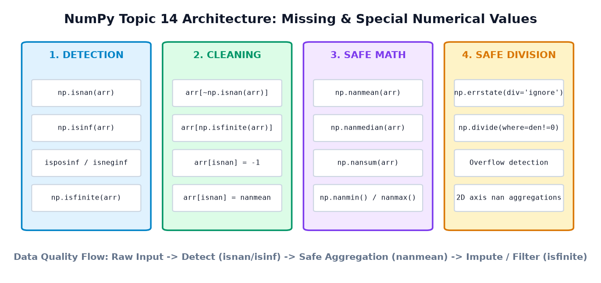
M. Comprehensive Practice Suite (35 Questions)
Apni understanding ko test karein. Har category me solution dekhne ke liye click karein:
Part 1: Output Prediction (10 Questions)
Q1. What is the output of print(np.nan == np.nan)?
FalseExplanation: IEEE 754 floating-point standard ke anusaar, NaN kisi ke barabar nahi hota, yahan tak ki khud ke bhi nahi!
Q2. What is the output of print(np.isnan(np.nan))?
TrueExplanation:
np.isnan() floating-point bitflags ko direct check karta hai aur accurate boolean result deta hai.
Q3. What is the output of np.mean(np.array([10.0, np.nan, 30.0]))?
nanExplanation: Ordinary
np.mean() NaN poisoning ke karan NaN return karta hai.
Q4. What is the output of np.nanmean(np.array([10.0, np.nan, 30.0]))?
20.0Explanation: NaN ko ignore karke
(10.0 + 30.0) / 2 = 20.0 calculate karta hai.
Q5. What is the output of np.isfinite(np.array([0.0, np.nan, np.inf, -5.0]))?
[True, False, False, True]Explanation:
0.0 aur -5.0 valid finite numbers hain. np.nan aur np.inf finite nahi hain.
Q6. What does np.nansum(np.array([5.0, np.nan, 15.0])) return?
20.0Explanation:
np.nansum() missing slots ko zero treat karke 5.0 + 0.0 + 15.0 = 20.0 sum nikalta hai.
Q7. What is the result of np.array([10.0]) / np.array([0.0]) inside with np.errstate(divide='ignore'):?
[inf]Explanation: Positive number divided by zero in floating-point returns positive infinity (
+inf).
Q8. What is the result of np.array([0.0]) / np.array([0.0]) inside with np.errstate(invalid='ignore'):?
[nan]Explanation: 0.0 / 0.0 indeterminate mathematical form hai, isliye NumPy
nan return karta hai.
Q9. What is the output of np.nanmean(np.array([10.0, np.inf, 20.0]))?
infExplanation:
nanmean sirf NaN ko chhodta hai! Infinity ko calculate karta hai, isliye (10 + inf + 20)/3 = inf.
Q10. What is np.array([1.0, None, 2.0]).dtype?
dtype('O') (Object dtype)Explanation:
None float nahi hai, isliye NumPy pura array Python object array me convert kar deta hai.
Part 2: Coding Challenges (8 Questions)
Challenge 1: Extract all finite numbers from a sensor array
import numpy as np
sensor = np.array([12.5, np.nan, 14.0, np.inf, -np.inf, 13.8])
clean = sensor[np.isfinite(sensor)]
print("Clean readings:", clean) # [12.5 14. 13.8]Challenge 2: Replace all NaNs with the available-data median
import numpy as np
scores = np.array([50.0, np.nan, 80.0, 90.0, np.nan])
med = np.nanmedian(scores)
imputed = scores.copy()
imputed[np.isnan(imputed)] = med
print("Imputed:", imputed) # [50. 80. 80. 90. 80.]Challenge 3: Count NaNs per row in a 2D matrix
import numpy as np
mat = np.array([[1.0, np.nan], [np.nan, np.nan], [3.0, 4.0]])
row_nans = np.isnan(mat).sum(axis=1)
print("Row missing counts:", row_nans) # [1 2 0]Challenge 4: Safe vectorized ratio calculation
import numpy as np
clicks = np.array([100.0, 0.0, 50.0])
impressions = np.array([2000.0, 500.0, 0.0])
ctr = np.full(clicks.shape, np.nan)
np.divide(clicks, impressions, out=ctr, where=(impressions > 0))
print("CTR:", ctr) # [0.05 0. nan ]Challenge 5: Compute column-wise nanmean of 2D matrix
import numpy as np
grid = np.array([[10.0, np.nan], [20.0, 30.0]])
col_means = np.nanmean(grid, axis=0)
print("Col means:", col_means) # [15. 30.]Challenge 6: Invert boolean mask to discard invalid readings
import numpy as np
data = np.array([4.5, np.nan, 6.2, np.nan, 8.1])
valid_data = data[~np.isnan(data)]
print("Valid subset:", valid_data) # [4.5 6.2 8.1]Challenge 7: Flag values exceeding 1e300 to safe upper bound
import numpy as np
huge = np.array([1e250, np.inf, 1e290])
huge[np.isinf(huge)] = 1e308
print("Capped:", huge)Challenge 8: Drop rows with more than 50% missing values
import numpy as np
data = np.array([[1.0, 2.0, np.nan], [np.nan, np.nan, 3.0]])
nan_fraction = np.isnan(data).mean(axis=1)
clean_rows = data[nan_fraction <= 0.5]
print("Retained rows:\n", clean_rows) # Only row 0 retainedPart 3: Debugging Questions (6 Questions)
Debug 1: Why does arr[arr == np.nan] = 0 not change anything?
Bug: arr == np.nan evaluates to all False, isliye koi bhi element select nahi hota.
Fix: arr[np.isnan(arr)] = 0
Debug 2: TypeError: ufunc 'isnan' not supported for input types
Cause: Array me None ya strings maujood hain jisse array object dtype ban chuki hai.
Fix: Convert array to float first: arr = arr.astype(float) aur missing values ke liye np.nan use karein.
Debug 3: Division by zero emitting unwanted RuntimeWarning
Cause: Bare array division a / b without warning control.
Fix: Use with np.errstate(divide='ignore'): ya np.divide(where=b!=0).
Debug 4: np.nanmean() returning inf instead of average
Cause: Array me np.inf tha. np.nanmean sirf NaN ko ignore karta hai, infinity ko nahi.
Fix: np.mean(arr[np.isfinite(arr)])
Debug 5: RuntimeWarning: Mean of empty slice
Cause: Array ke saare elements NaN hain.
Fix: Check before aggregating: if not np.isnan(arr).all(): ...
Debug 6: Modifying filtered subset modified original array?
Explanation: Boolean indexing copy create karta hai, par agar basic slice liya ho toh view banta hai. Safety ke liye hamesha .copy() use karein.
Part 4: Multiple-Choice Questions (8 MCQs)
MCQ 1: What is the IEEE 754 evaluation of np.nan == np.nan?
B) False [CORRECT]
C) NaN
D) TypeError
Explanation: IEEE 754 explicitly defines NaN as non-equal to everything.
MCQ 2: Which function checks for both NaN and Infinity?
np.isnan()B)
np.isinf()C)
np.isfinite() [CORRECT]D)
np.isreal()Explanation: np.isfinite() returns True ONLY for numbers that are neither NaN nor Infinity.
MCQ 3: What does 5.0 / 0.0 evaluate to in NumPy floating-point array?
B) +inf with a RuntimeWarning [CORRECT]
C) nan
D) 0.0
Explanation: Nonzero / 0 in IEEE 754 produces +inf.
MCQ 4: What does 0.0 / 0.0 evaluate to in NumPy?
B) inf
C) nan [CORRECT]
D) Crashes
Explanation: Indeterminate form produces Not-a-Number (nan).
MCQ 5: How does np.nansum() treat NaN elements?
B) Treats them as 0 in summation [CORRECT]
C) Returns nan if any NaN is present
D) Converts array to integers
Explanation: In sum, omitting an element is mathematically equivalent to adding 0.
MCQ 6: What happens when Python None is placed in a NumPy numeric array?
B) Converted to 0.0
C) Array dtype becomes object [CORRECT]
D) Program raises ValueError
Explanation: NumPy cannot cast None to native float without explicit conversion, degrading array to object.
MCQ 7: What does the tilde ~ operator do in arr[~np.isnan(arr)]?
B) Bitwise inverts boolean values (True becomes False, False becomes True) [CORRECT]
C) Deletes elements
D) Sorts elements
Explanation: Tilde inverts boolean mask so valid items become True.
MCQ 8: Why is replacing missing values with 0.0 dangerous?
B) It raises a warning
C) 0.0 is a legitimate score/measurement that skews statistics [CORRECT]
D) It turns array into object dtype
Explanation: Missing means unrecorded; 0 means zero recorded. Conflating them corrupts data analysis.
Part 5: Real-Life Mini-Challenges (3 Challenges)
Mini-Challenge 1: Patient Blood Pressure Monitor Auditor
Scenario: ICU telemetry recorded systolic BP: [120.0, np.nan, 125.0, np.inf, 118.0]. Calculate valid average BP and report anomalies.
import numpy as np
bp = np.array([120.0, np.nan, 125.0, np.inf, 118.0])
valid_mask = np.isfinite(bp)
print("Valid BP readings:", bp[valid_mask]) # [120. 125. 118.]
print("Average Systolic BP:", np.mean(bp[valid_mask])) # 121.0Mini-Challenge 2: Multi-City Pollution Index Matrix
Scenario: 3 cities x 3 days AQI matrix. Find which city had the cleanest average AQI ignoring missing readings.
import numpy as np
aqi = np.array([
[150.0, 160.0, np.nan], # City A
[np.nan, 110.0, 105.0], # City B
[220.0, np.nan, 210.0] # City C
])
city_means = np.nanmean(aqi, axis=1)
print("City Averages:", city_means) # [155. 107.5 215. ]
best_city_idx = np.argmin(city_means)
print("Cleanest City Index:", best_city_idx) # City 1 (City B)Mini-Challenge 3: Safe E-Commerce Conversion Rate Table
Scenario: Calculate conversion rates Orders / Visitors for 3 marketing campaigns where visitors can be zero.
import numpy as np
orders = np.array([15.0, 0.0, 30.0])
visitors = np.array([300.0, 0.0, 500.0])
cvr = np.full(orders.shape, np.nan)
np.divide(orders, visitors, out=cvr, where=(visitors > 0))
print("Safe CVR:", cvr) # [0.05 nan 0.06]N. Mini-Project: Smart Sensor Data Cleaner
Ab tak seekhe gaye saare concepts ko integrate karke ek complete end-to-end Python data cleaner build karte hain. Yeh project real-world industrial weather station data ko clean aur audit karega.
Project Architecture & Objectives
- Create realistic synthetic sensor telemetry with finite values, NaN (disconnection), and inf (amplifier saturation).
- Separately audit and count NaNs and Infinities.
- Preserve original dataset using
.copy(). - Apply documented cleaning policy: Impute NaNs with valid-data median, cap infinities at max allowable physical limit (45.0°C).
- Safely calculate derived temperature variation ratios avoiding zero denominators.
- Print complete verified output and compare original vs cleaned statistics.
import numpy as np # ------------------------------------------------------------- # STEP 1: Load Raw Telemetry Dataset # ------------------------------------------------------------- timestamps = ["00:00", "04:00", "08:00", "12:00", "16:00", "20:00"] raw_temps = np.array([22.4, np.nan, 26.8, np.inf, 31.2, 25.0]) variations = np.array([2.0, 0.0, 4.0, 0.0, 5.0, 3.0]) print("=== STEP 1: RAW SENSOR TELEMETRY ===") print("Raw Temperatures:", raw_temps) # ------------------------------------------------------------- # STEP 2: Anomaly Detection & Quality Audit # ------------------------------------------------------------- nan_mask = np.isnan(raw_temps) inf_mask = np.isinf(raw_temps) finite_mask = np.isfinite(raw_temps) print("\n=== STEP 2: QUALITY AUDIT REPORT ===") print("Total Sensor Points :", len(raw_temps)) print("Missing Readings (NaN) :", nan_mask.sum()) print("Surge Outliers (+/- Inf) :", inf_mask.sum()) print("Legitimate Finite Numbers:", finite_mask.sum()) # ------------------------------------------------------------- # STEP 3: Preserving Raw Data & Applying Cleaning Policy # ------------------------------------------------------------- cleaned_temps = raw_temps.copy() # Rule A: Impute NaNs with median of finite observations median_val = np.nanmedian(raw_temps[finite_mask]) cleaned_temps[nan_mask] = median_val # Rule B: Cap infinite surges to physical threshold (45.0°C) cleaned_temps[inf_mask] = 45.0 print("\n=== STEP 3: CLEANED DATASET ===") print("Cleaned Temperatures:", cleaned_temps) # ------------------------------------------------------------- # STEP 4: Safe Division for Relative Metric # ------------------------------------------------------------- rel_ratios = np.full(cleaned_temps.shape, np.nan) np.divide( cleaned_temps, variations, out=rel_ratios, where=(variations > 0) ) print("\n=== STEP 4: SAFE DERIVED METRICS ===") print("Relative Ratios (Temp / Variation):", rel_ratios) # ------------------------------------------------------------- # STEP 5: Statistical Comparison # ------------------------------------------------------------- print("\n=== STEP 5: FINAL STATISTICAL COMPARISON ===") print("Ordinary Mean on Raw Data (Failed) :", np.mean(raw_temps)) print("NaN-Aware Mean on Finite Readings :", np.nanmean(raw_temps[finite_mask])) print("Mean on Imputed Cleaned Dataset :", round(np.mean(cleaned_temps), 2))
Line-by-Line Hinglish Walkthrough
- Step 1:
raw_tempsme 6 readings hain jisme index 1 missing hai (nan) aur index 3 surge hai (inf). - Step 2:
nan_mask.sum()aurinf_mask.sum()se alag-alag count nikala gaya taaki pata chale kitne sensor disconnected the aur kitne over-voltage hue. - Step 3:
raw_temps.copy()kiya gaya taaki audit trail preserve rahe. Finite values[22.4, 26.8, 31.2, 25.0]ka median25.9nikaal kar index 1 me impute kiya gaya, aur surge index 3 ko physical upper bound45.0par cap kiya gaya. - Step 4:
np.divide(where=variations > 0)ne ensure kiya ki index 1 aur 3 par zero variation hone par system crash na ho aur safenanchhod diya jaye. - Step 5: Raw data par ordinary mean
nanfail hua, jabki cleaned data par29.38°Caccurate average calculate hua!
O. Summary & Quick Reference Cheat Sheet
Congratulations! Aapne NumPy ke missing values, IEEE 754 float arithmetic, aur professional data cleaning ko depth me master kar liya hai. Revision ke liye yeh cheat sheet hamesha reference karein:
| Operation / Goal | Recommended Code Syntax | Common Trap to Avoid |
|---|---|---|
| Detect NaN | np.isnan(arr) |
Never write arr == np.nan (Always False!) |
| Detect Infinity | np.isinf(arr) / isposinf() |
Don't confuse infinity with NaN |
| Keep Only Finite Numbers | arr[np.isfinite(arr)] |
Remember 0.0 and negative numbers are finite |
| Remove Missing Rows | arr[~np.isnan(arr)] |
Remember this creates a new 1D array copy |
| Impute Missing Values | arr[np.isnan(arr)] = np.nanmean(arr) |
Never mutate raw data; use .copy() first |
| Calculate Safe Average | np.nanmean(arr) |
Ordinary np.mean() fails with NaN |
| Safe Division by Zero | np.divide(a, b, out=res, where=b!=0) |
Do not silently convert zero-division to 0.0 |
| Check Python None | Avoid None in float arrays; use np.nan |
None turns float arrays into object dtype |